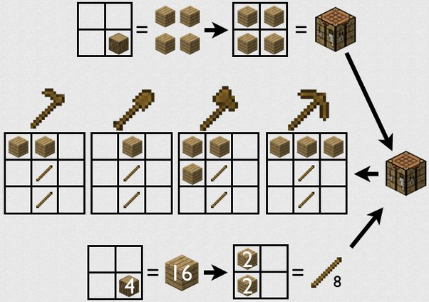

Are you a noob to minecraft? Don't worry, we all were once. . . I still am when it comes to certain platforms. But here is a link to something that might help you if you play on xbox or anything else that i didn't mention minecraft for noobs
First thing you have to do is download minecraft, Here is a link to the minecraft launcher minecraft launcher download what you do when you get the game is you can choose either single player or multiplayer mode. If you choose single player mode then you can make a world however you want. Once you actually get in the game, the first thing you would want to do is cut down a tree to get wooden tools. When you get the 4 wood you need, you open your inventory by pressing RT on your controller (for xbox and PS users) or TAB (for pc users) and create a crafting table. After you get your crafting table made, place it down and craft a wooden axe and wooden pickaxe. here is a picture on how to make all the wooden tools. Some things you will have to worry about are the monsters, here are all of the monsters that can spawn in the world.

something you will need to worry about is the mobs, some mobs are good and others are bad and out to kill your
Something else you will have to worry about while surviving in the world of minecraft is food! To get food you will need a sword or axe to kill the animals for meat or just make a farm, you can plant many vegetables with seeds (of course) on a farm. but to do that you will need t have farmland. To get farm land you will need a hoe.